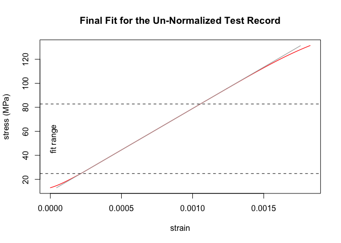
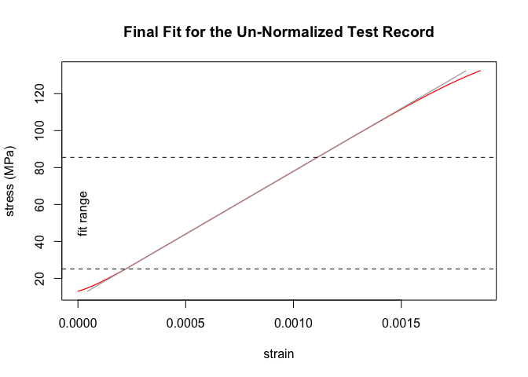
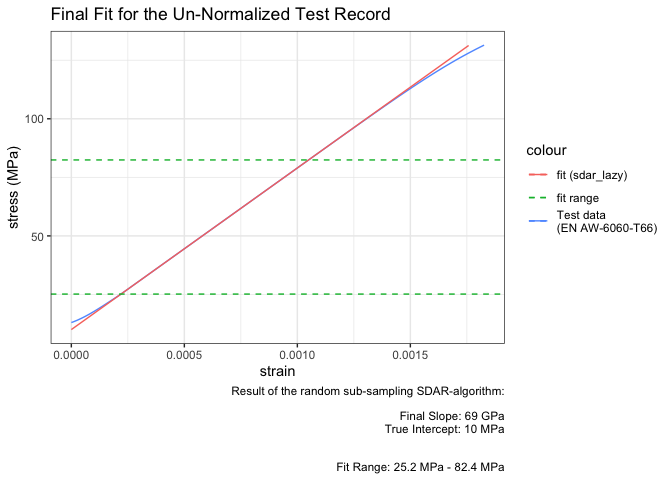

The sdarr-package provides a R implementation of the algorithm for Slope Determination by Analysis of Residuals (SDAR) as standardized in ASTM E3076-18.
It allows for automated and objective linear-fitting of mechanical test-data. See a detailed description of the algorithm in the NIST Technical Note 2050 by E. Lucon or in Graham & Adler (2011).
As the SDAR-algorithm, implemented in sdar(), heavily uses linear regressions, a faster version sdar_lazy() was implemented, which finds the optimum region for the final linear regression by random sub-sampling within the normalized range of the test-data.
Installation
You can install the latest release version of sdarr from GitHub with:
# install.packages("devtools")
devtools::install_github("soylentOrange/sdarr@*release")You can install the development version of sdarr from GitHub with:
# install.packages("devtools")
devtools::install_github("soylentOrange/sdarr")Examples
Standard SDAR-algorithm
A basic example of using sdar() on a synthetic data set, which is based on the properties of aluminium (EN AW-6060-T66). A toe-region and a non-zero intercept are added to make the test data less boring.
sdar() analyzes the data and will give a small report as a message. It should confirm the Young’s-modulus of 69 GPa and an intercept of 10 MPa. To make use of multi-core processing, configure furrr to use a multi-session strategy.
library(sdarr)
# setup multisession calculations with a maximum of 8 cores
# (or however many cores are available...)
future::plan(future::multisession,
workers = min(c(parallelly::availableCores(), 8))
)
# Synthesize a test record resembling EN AW-6060-T66
Al_6060_T66 <- synthesize_test_data(
slope = 69000, yield.y = 160,
ultimate.y = 215, ultimate.x = 0.08,
offset = 10,
toe.start.y = 3, toe.end.y = 15,
toe.start.slope = 13600
)
# Analyze the test record
Al_6060_T66.result <- sdar(Al_6060_T66,
x = strain, y = stress)
#> Determination of Slope in the Linear Region of a Test Record:
#> SDAR-algorithm
#> Data Quality Metric: Digital Resolution
#> x
#> Relative x-Resolution: 0.333333333333333
#> % at this resolution: 0
#> % in zeroth bin: 100
#> --> pass
#> y
#> Relative y-Resolution: 0.333333333333333
#> % at this resolution: 0.268096514745308
#> % in zeroth bin: 99.7319034852547
#> --> pass
#> Data Quality Metric: Noise
#> x
#> Relative x-Noise: 1.14246654063749e-14
#> --> pass
#> y
#> Relative y-Noise: 0.0572451173412188
#> --> pass
#> Fit Quality Metric: Curvature
#> 1st Quartile
#> Relative Residual Slope: 0.00200695921876536
#> Number of Points: 44
#> --> pass
#> 4th Quartile
#> Relative Residual Slope: -0.00712826619905767
#> Number of Points: 44
#> --> pass
#> Fit Quality Metric: Fit Range
#> relative fit range: 0.817634510547523
#> --> pass
#> Un-normalized fit
#> Final Slope: 68995.0585161614 MPa
#> True Intercept: 10.002547500777 MPa
#> y-Range: 24.8291015625 MPa - 82.7682495117188 MPa
Random sub-sampling modification of the SDAR-algorithm
A basic example of sdar_lazy(), a random sub-sampling modification of the SDAR-algorithm on a synthetic data set, which is based on the properties of aluminium (EN AW-6060-T66). A toe-region and a non-zero intercept are added to make the test data less boring (see above).
sdar_lazy() analyzes the data for the optimum size of the fitting region via random sub-sampling. It will give a small report as a message after finding the optimum fit. It should confirm the Young’s-modulus of 69 GPa and an intercept of 10 MPa. As the synthetic data set is noise-free (except for quantization-noise), only one random sub-sampling run will do.
To make use of multicore processing, configure furrr to use a multisession strategy (see above).
# set a random seed
set.seed(50041180)
# Analyze the test record
# (with enforced random sub-sampling)
Al_6060_T66.result_lazy <- sdar_lazy(Al_6060_T66,
x = strain, y = stress, plot = FALSE, enforce_subsampling = TRUE)
#> Determination of Slope in the Linear Region of a Test Record:
#> Random sub-sampling modification of the SDAR-algorithm
#> Random sub-sampling information:
#> 118 points of 375 points in the normalized range were used.
#> 0 % of the sub-samples passed the data quality checks.
#> 100 % of the sub-samples passed the fit quality checks.
#> 0 % of the sub-samples passed all quality checks.
#>
#> Data Quality Metric: Digital Resolution
#> x
#> Relative x-Resolution: 0.333333333333333
#> % at this resolution: 0
#> % in zeroth bin: 100
#> --> pass
#> y
#> Relative y-Resolution: 0.333333333333333
#> % at this resolution: 0.268096514745308
#> % in zeroth bin: 99.7319034852547
#> --> pass
#> Data Quality Metric: Noise
#> x
#> Relative x-Noise: 1.14246654063749e-14
#> --> pass
#> y
#> Relative y-Noise: 0.0572451173412188
#> --> pass
#> Fit Quality Metric: Curvature
#> 1st Quartile
#> Relative Residual Slope: 0.00287008465272615
#> Number of Points: 43
#> --> pass
#> 4th Quartile
#> Relative Residual Slope: -0.00734852665893149
#> Number of Points: 43
#> --> pass
#> Fit Quality Metric: Fit Range
#> relative fit range: 0.827242206235012
#> --> pass
#> Un-normalized fit
#> Final Slope: 68995.3087875296 MPa
#> True Intercept: 10.0023835307365 MPa
#> y-Range: 25.15869140625 MPa - 82.4249267578125 MPaPlot Functions
sdar() and sdar_lazy() will create diagnostic plots throughout calculations, which will only be shown when requested (i.e. set plot = TRUE for showing a plot of the final fit, or plot.all = TRUE for showing all additional diagnostic plots). To have a plot drawn later, you can call the provided plot-function from the results.
The plot-functions are crated, so you can easily tap their environment to convert it into e.g. a ggplot2-graphic.
# show plot of final fit using the plot function from the result (see above)
Al_6060_T66.result_lazy$plots$final.fit()
# satisfy pipe addiction...
library(magrittr)
# make nice and shiny graphics with ggplot2...
library(ggplot2)
# plot the final fit using ggplot2
Al_6060_T66.result_lazy %>% {
# tap the environment of the crated plot-function
plot.env <- rlang::fn_env(.$plots$final.fit)
# get data and labels
plot.data <- plot.env$plot.data
plot.main <- plot.env$plot.main
plot.xlab <- plot.env$plot.xlab
plot.ylab <- plot.env$plot.ylab
plot.y.data.max <- plot.data$y.data %>% max()
plot.y.lowerBound <- plot.env$y.lowerBound
plot.y.upperBound <- plot.env$y.upperBound
# create the ggplot2
plot.data %>% ggplot(aes(x = x.data, y = y.data,
color = "Test data\n(EN AW-6060-T66)")) +
geom_line() +
geom_line(data = plot.data %>%
dplyr::filter(y.fit <= plot.y.data.max),
aes(x = x.data, y = y.fit, color = "fit (sdar_lazy)")) +
geom_hline(aes(color = "fit range",
yintercept = plot.y.lowerBound),
linetype = "dashed", show.legend = TRUE) +
geom_hline(aes(color = "fit range",
yintercept = plot.y.upperBound),
linetype = "dashed",show.legend = TRUE) +
theme_bw() +
labs(title = plot.main,
x = plot.xlab,
y = plot.ylab,
caption = paste0("Result of the random sub-sampling SDAR-algorithm:",
"\n\nFinal Slope: ",
round(.$sdar$finalSlope / 1000, 1), " GPa",
"\nTrue Intercept: ",
round(.$sdar$trueIntercept, 1), " MPa","
\n\nFit Range: ",
round(plot.y.lowerBound, 1), " MPa - ",
round(plot.y.upperBound, 1), " MPa"))
}